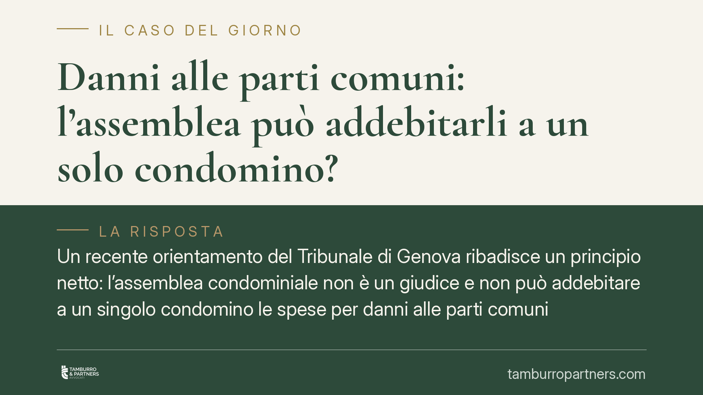

Danni alle parti comuni: l'assemblea può addebitarli a un solo condomino?
Un recente orientamento del Tribunale di Genova ribadisce un principio netto: l'assemblea condominiale non è un giudice e non può addebitare a un singolo condomino le spese per danni alle parti comuni senza un accertamento giudiziale della responsabilità. Fino a quel momento le spese seguono il criterio millesimale, salva la successiva azione di rivalsa. Vediamo perché e cosa comporta in pratica.

Il principio
L'assemblea condominiale è un organo di gestione, non un organo giurisdizionale. Decide sull'amministrazione delle parti comuni, approva i bilanci, ripartisce le spese. Non può, invece, stabilire chi è responsabile di un danno e condannarlo a pagarlo da solo.
Questa distinzione – tra potere gestorio dell'assemblea e potere giurisdizionale del giudice – è il cuore della questione. Secondo una recente pronuncia del Tribunale di Genova, una delibera che addossa a un unico condomino l'intero costo di un danno, in assenza di un accertamento giudiziale della sua responsabilità, è viziata: l'assemblea si arroga una funzione che la legge riserva al giudice.
Inquadramento normativo
Il criterio generale di ripartizione delle spese è fissato dall'art. 1123 c.c.. Il primo comma prevede che le spese per la conservazione e il godimento delle parti comuni siano sostenute dai condomini in misura proporzionale al valore della proprietà di ciascuno, cioè per millesimi.
Il secondo e il terzo comma introducono eccezioni che vanno tenute distinte dal caso in esame. Il secondo comma riguarda le cose destinate a servire i condomini in misura diversa: la spesa si ripartisce in proporzione all'uso che ciascuno può farne (ad esempio le scale, a carico in parte maggiore dei piani alti). Il terzo comma disciplina le parti che servono solo alcuni condomini: la spesa grava esclusivamente sul gruppo che ne trae utilità.
Nessuna di queste norme autorizza l'assemblea a imputare una spesa in base alla colpa. L'uso differenziato è un criterio oggettivo di ripartizione; l'accertamento di responsabilità per un danno è tutt'altro: presuppone la verifica di un fatto illecito, del nesso causale e dell'elemento soggettivo. Operazione che compete al giudice, non alla maggioranza assembleare.
Implicazioni pratiche
Per il condomino colpito dall'addebito la distinzione è decisiva. Una delibera che gli attribuisce per intero una spesa da danno, senza titolo giudiziale, può essere impugnata.
Lo strumento è l'art. 1137 c.c., che consente ai condomini assenti, dissenzienti o astenuti di chiedere l'annullamento della delibera entro 30 giorni. Il termine decorre dalla data della deliberazione per chi era presente e ha votato contro o si è astenuto; dalla data di comunicazione del verbale per chi era assente. Decorso quel termine, la delibera annullabile diventa stabile. La tempestività, qui, è tutto.
Per il condominio e l'amministratore la sequenza corretta è lineare: prima si ripartisce la spesa per millesimi secondo l'art. 1123 c.c., poi – se si ritiene che il danno sia imputabile a un singolo – si agisce in giudizio con un'azione di rivalsa per recuperare quanto anticipato. L'ordine non è invertibile.
Va ricordato, inoltre, che in materia condominiale il tentativo di mediazione è condizione di procedibilità della domanda giudiziale, ai sensi dell'art. 71-quater disp. att. c.c. Prima di avviare la causa di rivalsa occorre quindi esperire la mediazione.
Cosa fare in concreto
Se sei il condomino destinatario dell'addebito:
- Verifica nel verbale se la delibera ti attribuisce la spesa per intero senza un titolo giudiziale: in tal caso è impugnabile.
- Rispetta il termine di 30 giorni dell'art. 1137 c.c., calcolando la decorrenza in base alla tua posizione (presente o assente).
- Conserva la comunicazione del verbale: fa fede per il calcolo del termine.
Se sei l'amministratore:
- Riparti sempre la spesa per millesimi ex art. 1123 c.c.; non far votare addebiti individuali fondati su presunte responsabilità.
- Se ritieni il danno imputabile a un condomino, promuovi l'azione di rivalsa in sede giudiziale, previo tentativo obbligatorio di mediazione.
Disclaimer
Contributo informativo a cura di Tamburro & Partners - Avv. Giuseppe Tamburro. Non costituisce parere legale.
Ogni condominio ha una storia a sé.
Se gestisci un'amministrazione e vuoi un confronto su una specifica questione condominiale, scrivi allo studio. Ti rispondiamo entro un giorno lavorativo.